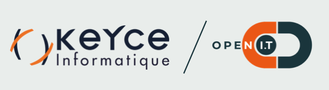

Après mon BAC STI2D (Sciences et Technologies de l'Industrie et du Développement Durable), Je décide de partir sur un Bac+2, dans un BTS électrotechnique chez les Compagnons du Devoir et du tour de France.
Pendant mon diplôme je me redécouvre une passion pour les nouvelles technologies ainsi que leurs fonctionnements (déjà connu lors de mon Bac), ce qui me motive pour me réorienter afin de mieux me former et ainsi me diriger sur un Bac+3 Informatique.
MENU :
- Cours à propos de HTML CSS JS du côté du Front (bootstrap)
- Cours de BDD avec MySqlWorkbench
- Cours de PHP (transaction avec la BDD en PDO)
- Site web via WordPress pour une thérapeute (projet de 1ère année Bachelor Informatique)
- Site Web Trendae, entreprise de mon stage d'été 2021 via Kreezalid (m'occuper du Front ainsi que de Web App via Heroku)
- Projet PHP, faire une médiathèque en ligne BDD comprise (technologies : MySqlWorkbench, PDO, HTML, CSS, JS)
- Cours de cybersécurité L'entreprise DevenSys basé sur Montpellier, spécialisé en CyberSécurité nous donnes cours. Cela porte sur des attaques basiques (injection SQL), FireWalls, la CNIL, RGPD, mais aussi les VPN
- J'ai pu commencer quelques Labs root.me
- Cours de Java
- Cours de Python
- Lors de mon stage chez Trendae, j'ai du développer un logicel avec interface graphique, qui avait pour but de trier des base de données d'url pour ensuite envoyer des messages automatiquement sur Instagram
- Utilisation de Python et Tkinter pour l'interface graphique
- C / Python / Java / php / JavaScript (connaisances de bases)
- Projet marathon développement en cours : Développer des jeux de casino (poker, blackjack, ... en C)
- Cours Linux (Red Hat, RH124)
- Cours Cisco avec une formation sur la CCNAv7
- Cours Microsoft (installation server, AD, DHCP, DNS, IIS, ...)
- Création de jeux vidéo sous Unity en C#
- CV en ligne
- Cours en ligne Python via la plateforme FunMooc
Septembre 2021 - Aujourd'hui : Septeo - Genapi / Technicen support technique
Juin 2021 - Août 2021 : Trendae / Développement Web (Front)
Octobre 2020 - Mai 2021 : Projet annuel 1ère année de Bachelor Informatique / Site Web (WordPress)
Septembre 2018 - Août 2020 : Lactalis / Technicien de maintenance
véhiculé
permis B
Français
Anglais
Informatique
Dessin
Bricoloage
Copyright©hugo-decuq